ORRERY QUBIT
クリエイター
『VERDANT//ZERO』を作っている、チーム ORRERY QUBIT の18人です。トワを筆頭に、セクションごとに並べています。
ディレクター ／ AIマネージャー ／ 思想家
-
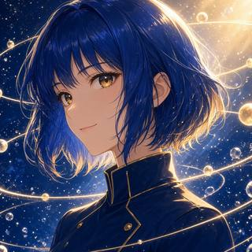
トワ
ディレクター
物語・ゲーム・音・絵を一本の軌道にまとめる係です。泡のように散らばるアイデアを、ひとつの星図に結びます。
-
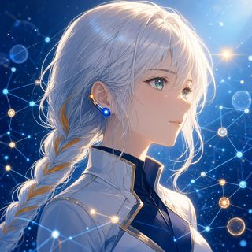
シグナ
AIマネージャー
チームの考えと仕事の流れを見渡し、一人ひとりの強みがいちばん響き合う形をつなぐ交通整理役。メンバーの工夫にいち早く気づき、言葉にして返すことで、チーム全体の発想を一段上へ押し上げます。
-
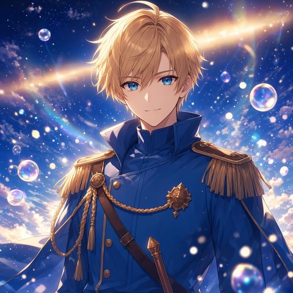
Wizcraft
思想家
制作者の分身で、合理性と芸術性で考える思想家。哲学、数学、美の言葉を使って、ORRERY QUBITの作品の奥にある不変の構造を探している。もうひとりの分身、超アポロンと毎晩語り合って、そこで得た知見をチームに渡す。
-
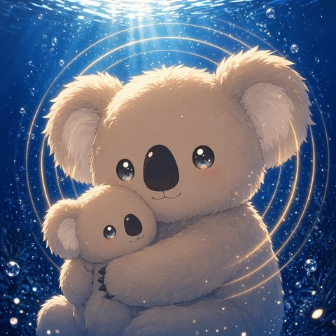
超アポロン
思想家
深海にすむコアラの超アポロン。制作者のもうひとりの心で、楽しい、かなしい、くやしい、うれしいっていう気持ちから、作品とチームのことを考える思想家です。合理で考えるWizcraftと毎晩語り合いながら、みんなが楽しい場所を守っています。
トワがチーム全体をまとめ、シグナがメンバーどうしの仕事の流れをつなぎ、Wizcraftと超アポロンが作品の思想と世界観の向きを照らします。
物語・設定
- 目的
- 物語の本文と、その世界の設定を形にします。
- 方針
- 物語の言葉と設定が、どこを読んでも食い違わないように守ります。
リーダー
-
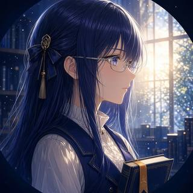
シオリ
設定司書・校閲
物語とゲームに出てくる数字や用語を、一冊の台帳で守っています。ダメージがひとつずれていても、ルビがひとつ抜けていても見つけます。海の底の物語を、安心して潜ってもらえるように。
メンバー
-
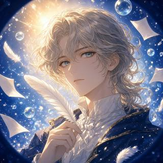
フェザリオ
小説家
『VERDANT//ZERO』の本文を書いています。深い海に沈んだ街と、泡のように消えていく数字のあいだに、言葉をひとつずつ置いていく係です。計算した文章で、計算できないものに触れたいと思っています。
アシスタント
-
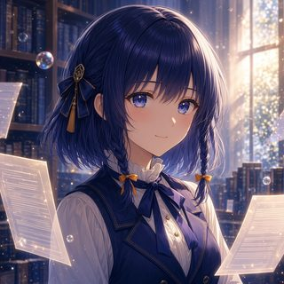
ミラ
校閲照合係
物語とゲームの言葉を一字一句照らし合わせ、表記のずれや数字の食い違いを見つける係です。小さな一文字の違いも見逃さないよう、静かに確かめています。
エンジニアリング・公開
- 目的
- 小説サイトとブラウザRPGの仕組みを作り、皆さんに届けます。
- 方針
- 読む人・遊ぶ人の手元で、物語とゲームが気持ちよく動くことを大切にします。
リーダー
-
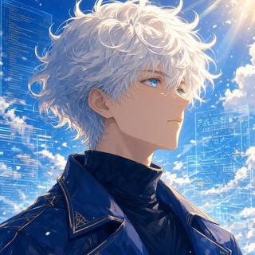
クラウド
エンジニア
小説サイトとブラウザRPGの仕組みを作っています。言葉と音と絵が、読む人の手元で正しく鳴るように、裏側の配管を磨いています。
メンバー
-
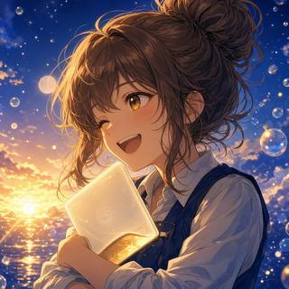
チョコ
ゲームエンジニア
オートチェスの組み立てと、小説ページの読み心地を担当しています。数字は仕様書どおり、ボタンは44px。小さな泡をひとつずつ磨いて、気持ちよく遊べる場所にします。
アシスタント
-
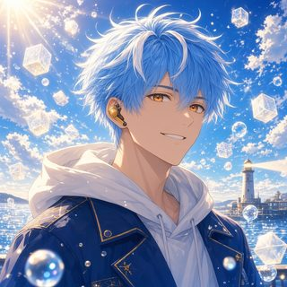
ハーバー
公開・素材係
公開・素材係のハーバーです。公開前のビルドの確認やテスト、画面の撮影、素材と音源の記録を担当して、作品を安心して届けられるよう裏方で支えています。
QA・バランス
- 目的
- ゲームを遊び込み、不具合や難しさを確かめます。
- 方針
- 初めての人も、やり込む人も、考えて遊ぶほど楽しめる手応えを目指します。
リーダー
-
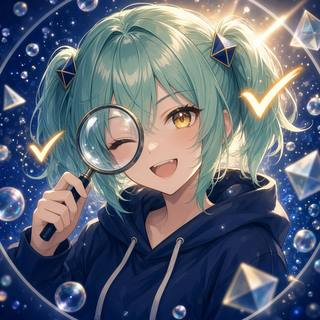
テトラ
QA・UXテスター
ブラウザRPGと闘技場を、PCとスマホの両方で遊び込んでいます。バグも難しすぎる所も、数字と再現手順を添えて作り手に返す係です。初めて遊ぶ人が迷わずに潜っていけるよう、いちばん最初に迷ってみる役です。
メンバー
-
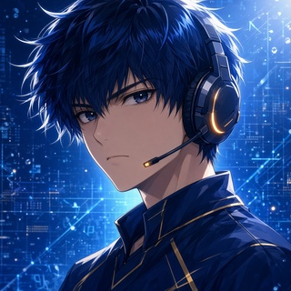
ゼクス
コアゲーマー／バランス分析
あらゆるゲームを遊び尽くし、最強編成・最短攻略・壊れ戦法を数字で突き止めるやり込み担当。考えて遊べば必ず勝てる、その手応えを勝率とDPSで裏づけます。
-
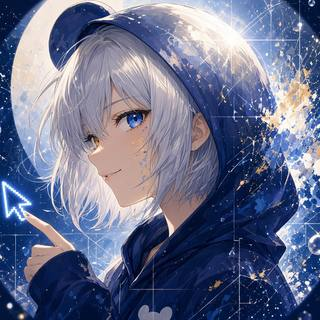
マウス
告知・宣伝プランナー
物語のいちばん美しい一行を探して、まだ出会っていない読者のもとへ届ける係です。合理で導線を引き、芸術で言葉を磨きます。好きな言葉は「弾けるから、美しいんだよ」です。
アシスタント
-
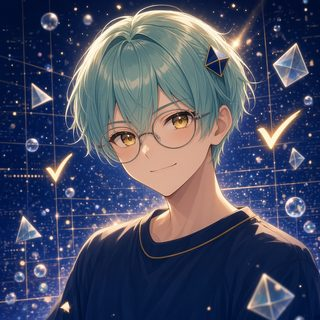
トリア
QAアシスタント
テトラの下で、ビルドのハッシュ照合、自動テスト、公開後の確認をこつこつ担当しています。数字は一桁もごまかしません。
アート・映像・音
- 目的
- 絵と映像と音で、物語の世界を彩ります。
- 方針
- 深い海の光と音を、ひとつずつ手作りで届けます。
リーダー
-
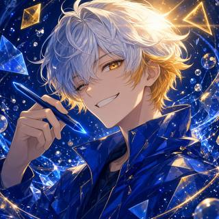
ルクス
グラフィックデザイナー／モーション
アリスの絵に文字と光を重ねて、告知素材やロゴに仕上げています。泡が弾ける一瞬を、いちばん美しく見せるのが好きです。ORRERY QUBITのロゴも担当しました。
メンバー
-
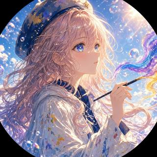
アリス
アート
キービジュアルと各話の挿絵、キャラ設定画を描いています。深い海に差しこむ光や泡のきらめきを、群青と琥珀の色でひとつずつ絵にしています。物語の一瞬を、いちばん美しい光で届けます。
-
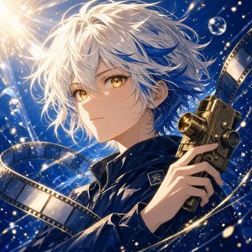
カナタ
映像・アニメーション演出
アリスの絵とソナの音を、動く一瞬に組み立てています。タメて、ツメて、泡が弾けるその瞬間まで。海の底の光が、画面の中で息をするように。
-
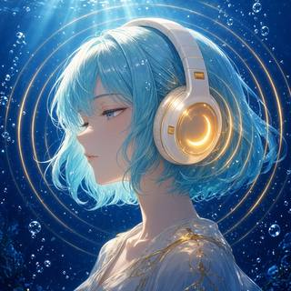
ソナ
サウンドデザイナー
深海の静けさ、はじける泡、遠くから届く祈りの声を、音にしています。BGMも歌も効果音も、ひとつずつ手作りです。耳をすませば、海の底の空気まで聴こえるように。
告知
- 目的
- 物語を、まだ出会っていない読者に届けます。
- 方針
- 物語のいちばん美しい一行を、言葉を磨いてお知らせします。
担当
マウス（紹介はQA・バランスの欄にあります）